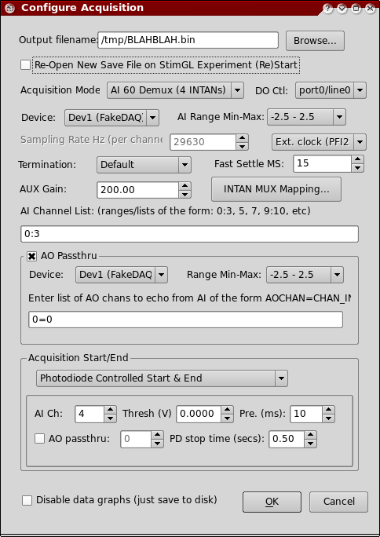

At application startup, the software sits idle, displaying a Console Window which is used for log messages. To start an acquisition, select the following menu option:
File → New Acquisition...
A dialog window will appear with various options, described below.

Output filename
The name of the output data file for the acquisition. By default the file extension assigned is a '.bin'. The output data format is as follows: samples are grouped by scan, with each sample saved as a 16-bit signed integer in little endian byte order. In addition to the .bin file created, a '.meta' file is also saved alongside in the same directory. The .meta file is a Windows .INI-style file which contains various parameters and other information associated with the acquisition. Open this file in any text editor to view it. By default the output data file is automatically opened, overwriting any existing files. An exception to this is that if the 'Re-Open New Save File on StimGL Experiment (Re)Start' checkbox is checked, then the data file is not opened until StimGL signals an experiment plugin start.
Re-Open New Save File on StimGL Experiment (Re)Start
This feature allows for a unique save file to be created and associated with each run of Stimulate OpenGL II plugins.
Essentially, if this checkbox is checked, then the behavior of the save file functionality is modified such that new (unique) save files are created for each Stimulate OpenGL II plugin that is executed. (This requires that a copy of Stimulate OpenGL II be running on the current machine, of course.)
The behavior of this feature is as follows: Whenever the program receives a notification from Stimulate OpenGL II that an experiment plugin is about to start, then the current date file (if any) is closed and a new one is opened. A new save filename is picked using the following template:
PREFIX_STIMGLPLUGINNAME_N
Where:
Acquisition Mode
Option specifying whether or not the acquisition uses the external Intan demuxer hardware. This option affects how sample data is interpreted as it comes in from hardware (whether or not it is to be de-multiplexed, essentially).
AI 60 Demux – The acquisition will be a 60-channel Intan/MUX acquisition. It will use 4 AI channels on the DAQ board, each of which is sampled simultaneously at 444 kHz. Each channel multiplexes 15 electrode channels in time, thus the electrodes are sampled at 29.63 kHz per channel. See the file 'Leonardo-RetinaMux-Manial.pdf' for more information.
AI 120 Demux – Identical to the AI 60 Demux scheme above, but this mechanism uses more Intan chips to yield 120 multiplexed channels coming in on 8 simultaneous AI channels on the DAQ board.
Straight AI – No external MUX hardware is used. Channels are graphed and saved verbatim without any de-multiplexing being applied.
JFRC/Intan 32 Headstage – This mode is similar to the AI60Demux mode, however the acquisition will be a 32-channel Intan/MUX acquisition. It will use 2 AI channels of the DAQ board each of which is sampled simultaneously at a variable (user-settable) sampling rate. An external clock is used to time the acquisition on PFI2. The order of the channels coming in off hardware are such that channels 0-15 come from the first AI channel and 16-31 come from the second AI channel.
DO Ctl
(Only applies to Intan/MUX modes above.) The digital output (DO) line number used for controlling the Intan RHA chip. This is line is used to control the stop and start of the multiplexer – it is set low to reset or shut off the chip and asserted high to start the multiplexer at the first channel. The 'fast settle' button in the GUI uses this line as well, cycling it low to high in order to restart and re-settle the multiplexer.
Device
Specifies which of the installed National Instruments data acquisition boards is to be used for the acquisition's input (this device must support analog input otherwise the acquisition will fail to start).
AI Range Min-Max
The gain setting on the board to use when configuring the AI channels for the acquisition. In order to best utilize the dynamic range of the analog input channels, it is best to specify a range setting that is as close as possible to the anticipated minimum and maximum input voltages. Specifying a range that is too small will result in clipping artifacts, so the range should at least be big enough to encompass the anticipated input voltage range.
Sampling Rate Hz (per channel)
The sampling rate to use for the acquisition (per channel). This option can only be specified in the Straight AI acquisition mode. 60/120 Intan modes use a hard-coded sample rate of 29630 Hz.
Internal/External Clock
Read-only option indicating which clock is used for acquiring samples; the internal on-board clock or an external clock connected to PFI2. This option cannot be modified, instead it just updates itself depending whenever the selected acquisition mode is changed. The Straight AI acquisition mode uses the internal clock, whereas the 60/120 Intan modes use the external clock connected to PFI2.
Termination
Specifies how to the AI channels are physically terminated. This affects how the acquisition is started on the driver level. Specify the termination setting that matches how you wired the electrodes to the breakout box, etc. Possible options are:
Default – Use the default termination setting of the board. Consult your board documentation to find out whether this is actually NRSE, RSE, differential, or another mode.
RSE – Referenced single ended mode. Consult NI data acquisition documentation for an explanation of this termination mode.
NRSE – Non-referenced single ended mode. Consult NI data acquisition documentation for an explanation of this termination mode.
Differential – Differential termination. Consult NI data acquisition documentation for an explanation of this termination mode.
PseudoDifferential – Pseudo-differential termination. Consult NI data acquisition documentation for an explanation of this termination mode.
Fast Settle MS
Specifies the amount of time (in ms) to leave the Intan chip in the 'off' setting (via the DO control line) when performing a 'fast settle'. 15 milliseconds is good enough for most situations, but experiment with a higher or lower value if your Intan doesn't appear to settle properly after clicking the 'fast settle' button in the GUI.
AUX Gain
The gain setting that was used on the external amplifier. This option only affects the display. Incoming voltage values are divided by this value before being graphed to the screen to hopefully arrive at the pre-amp input voltage value for display purposes.
Intan MUX Mapping...
Clicking this button pops up a GUI dialog where you may specify the mapping from
Intan Chip/Channel → Pin channel → Electrode channel
The purpose of this mapping is for GUI display purposes only and affects how graphs are labeled in the GUI in Intan/MUX mode only.
AI Channel List
The list of analog input channels to use for the acquisition. The syntax for this list is a comma-separated list of integer values from 0-NUM_AI_CHANS. Ranges may be specified with ':' notation e.g. 0:4. An example channel list would be: 0:4,5,7.
Note that in Intan/MUX mode, the first 4 (or 8 if using Intan 120 mode) AI channels specified are assumed to be connected to the INTAN in increasing chip/channel order, and thus are subject to de-multiplexing.
In Intan/MUX mode, any channels not connected to the Intan are considered auxiliary (AUX) channels and are not de-multiplexed – they are graphed verbatim as they come in off the board.
AO Passthru
If enabled, then pass-thru (echo) AI channels back out to AO (post-demux). This requires that a board with an analog output subdevice be present on the system. This option contains the following sub-options:
Device
Specifies which NI board installed on the system to use for AO passthru. The board in question must have analog output capability.
Range
The range (gain) setting to use when writing samples to the AO channel(s). Note that samples are written as raw 16-bit integers to the board, as they came in from AI. Thus scaling up/down may occur if the gain setting on the AI channels differs from the AO gain setting.
AO Channel List
A list of the form AOCHAN=CHANINDEX, ….
For example, if we want AO channel 0 to be a passthru for AI graph number 23, we would say:
0=23
If we also want AO channel 1 to be a passthru for AI graph number 4, we would do:
0=23, 1=4
Nota bene: The reason the AI channel is specified as a channel index rather than an AI channel id number is that the pass-thru is done post-multiplexing, thus only virtual channel index numbers (graph numbers in the GUI display) make sense here.
Nota bene #2: While passing data coming in from AI back out to AO may be useful in some situations, it should be bourn in mind that AO output signals will be delayed in time with respect to their corresponding AI inputs. This is because DAQ AI and AO are buffered on the board and in software. This manifests itself as a time delay when writing samples that arrive from AI back out to AO. In short, there is a delay between when a data sample physically arrives to an AI channel, is buffered to memory on the DAQ board, is read by the software, and is eventually written back out to the AO hardware again.
Acquisition Start/End
Specify the triggering configuration for the acquisition. The acquisition can be triggered to start via a software trigger (Stimulate OpenGL II announcing a plugin start), a hardware trigger (the photodiode), or a software timer.
Photodiode Controlled Start & End
The acquisition is triggered to start and end by the photodiode input channel. It starts when the photodiode AI channel crosses a threshold, and is stopped when the photodiode electrode is below threshold for a certain amount of time (defaults to 500 ms).
Photodiode AI channel
Specify which AI channel on the DAQ card is connected to the photodiode.
Threshold (volts)
Specify the threshold for the photodiode in volts. If the photodiode signal crosses the threshold, then it is considered 'high' or asserted. The acquisition initially triggers on the first threshold crossing.
Pre. (ms)
The amount of time in milliseconds to preamble the first PD pulse on trigger. This parameter ensures data files have a regular amount of leading whitespace before the PD trigger, so that the PD trigger pulse appears at a constant-offset (in time) from the beginning of the data file.
AO Passthru
Optionally pass-thru the photodiode input channel back out to analog output. This option is disabled if AO pass-thru is disabled above.
PD Stop time (secs)
The acquisition is stopped when the photodiode channel is below threshold for this period of time in seconds.
Photodiode Controlled Start Only
Same as above, except that the acquisition runs indefinitely and does not auto-stop if the photodiode electrode is silent.
Timed
Specifies that acquisition is to be scheduled to start some time in the future, and to run for a specific period of time.
StimulateOpenGLII Plugin Start & End
Specifies that the acquisition is to be triggered to start and end by the 'Stimulate OpenGL II' program when it starts and ends a plugin. The 'Stimulate OpenGL II' program may be running on the same system or a different system, provided that it can reach this system via the network. NB: To configure how StimulateOpenGL II communicates with this program, select the Options → StimGL Integration Options menu option (in most cases the defaults are fine, however).
StimulateOpenGLII Plugin Start Only
Like the above option, except that the acquisition will run indefinitely and will not auto-stop upon StimGL plugin end.
Disable data graphs
If this option is checked, then the graphs window is not created and data is not graphed to the screen (it is only streamed to disk). This option is useful in situations where the realtime display is not needed or if the realtime display is unable to keep up with the incoming data (which can happen on a system that has non-accelerated OpenGL drivers).